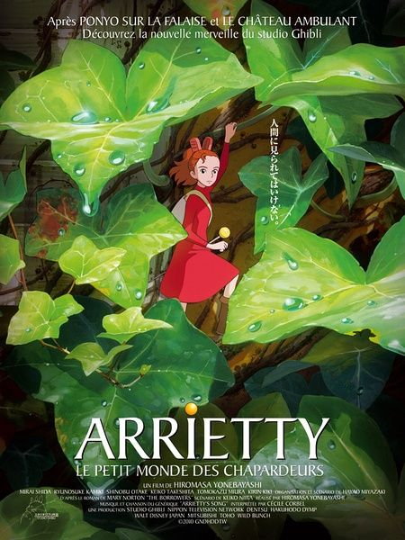

HOME

The Secret World Of Arrietty
《借东西的小人阿莉埃蒂》
(2010)
《借东西的小人阿莉埃蒂》是由吉卜力工作室在2010年上映的动画电影，改编自英国小说家玛丽·诺顿的奇幻小说《地板下的小矮人》。米林宏昌执导的首部电影，宫崎骏负责本片企划及剧本编写。
《借东西的小人阿莉埃蒂》讲述名叫翔的少年因心脏病的关系被带到郊外的小屋里疗养。到小屋时，他在草堆丛中看见一个10公分左右的女性小矮人。那群居住在屋子下的小矮人们为求生存会在人类不注意的情况下，偷取走人类的日常用品。被翔发现的女性小矮人“阿莉埃蒂”知道自己被偷看后十分惊恐但随后得知翔并没有恶意便试着跟翔接触并展开一段小小的友情。